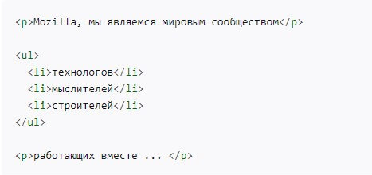

Что такое HTML?
HTML (от английского HyperText Markup Language) — это язык гипертекстовой разметки страницы. Он используется для того, чтобы дать браузеру понять, как нужно отображать загруженный сайт.
Язык гипертекстовой разметки HTML был разработан британским учёным Тимом Бернерсом-Ли приблизительно в 1986—1991 годах в стенах ЦЕРНа в Женеве в Швейцарии. HTML создавался как язык для обмена научной и технической документацией, пригодный для использования людьми, не являющимися специалистами в области вёрстки.
Основы HTML.
HTML не является языком программирования, это язык разметки. Используется, чтобы сообщать вашему браузеру, как отображать веб-страницы, которые вы посещаете. Он может быть сложным или простым, в зависимости от того, что хочет веб-дизайнер.
HTML состоит из ряда элементов - тегов, которые вы используете, чтобы вкладывать или оборачивать различные части контента, чтобы заставить контент отображаться или действовать определённым образом. Ограждающие теги могут сделать слово или изображение ссылкой на что-то ещё, могут сделать слова курсивом, сделать шрифт больше или меньше и так далее.
Анатомия HTML-элемента.
Рассмотрим структуру HTML-документа на примере абзаца, тег <p>.
Структура абзаца с html-тегом <p>
Главными частями нашего элемента являются:
- Открывающий тег (Opening tag): Состоит из имени элемента (в данном случае, "p"), заключённого в открывающие и закрывающие угловые скобки. Открывающий тег указывает, где элемент начинается или начинает действовать, в данном случае — где начинается абзац.
- Закрывающий тег (Closing tag): Это то же самое, что и открывающий тег, за исключением того, что он включает в себя косую черту перед именем элемента. Закрывающий элемент указывает, где элемент заканчивается, в данном случае — где заканчивается абзац. Отсутствие закрывающего тега является одной из наиболее распространённых ошибок начинающих и может приводить к странным результатам.
- Контент (Content): Это контент элемента, который в данном случае является просто текстом.
- Элемент(Element): Открывающий тег, закрывающий тег и контент вместе составляют элемент.
Анатомия HTML-документа.
HTML — теговый язык разметки документов. Любой документ на языке HTML представляет собой набор элементов, причём начало и конец каждого элемента обозначается специальными пометками — тегами.
Элементы могут быть пустыми, то есть не содержащими никакого текста и других данных. В этом случае обычно не указывается закрывающий тег (например, тег переноса строки <br> — одиночный и закрывать его не нужно) .
Структура простого HTML-документа.
Рассмотрим подробнее из чего состоит HTML-страница:
- <!DOCTYPE html> — доктайп. В прошлом, когда HTML был молод (около 1991/1992), доктайпы должны были выступать в качестве ссылки на набор правил, которым HTML страница должна была следовать, чтобы считаться хорошим HTML, что могло означать автоматическую проверку ошибок и другие полезные вещи. Однако в наши дни, никто не заботится об этом, и они на самом деле просто исторический артефакт, который должен быть включён для того, что бы все работало правильно. На данный момент это все, что вам нужно знать.
- <html></html> — элемент <html>. Этот элемент оборачивает весь контент на всей странице, и иногда известен как корневой элемент.
- <head></head> — элемент <head>. Этот элемент выступает в качестве контейнера для всего, что вы пожелаете включить на HTML страницу, но не являющегося контентом, который вы показываете пользователям вашей страницы. К ним относятся такие вещи, как ключевые слова и описание страницы, которые будут появляться в результатах поиска, CSS стили нашего контента, кодировка и многое другое.
- <body></body> — элемент <body>. В нем содержится весь контент, который вы хотите показывать пользователям, когда они посещают вашу страницу, будь то текст, изображения, видео, игры, проигрываемые аудиодорожки или что-то ещё.
- <meta charset="utf-8"> — этот элемент устанавливает UTF-8 кодировку вашего документа, которая включает в себя большинство символов из всех известных человечеству языков. По сути, теперь документ может обрабатывать любой текстовый контент, который вы в него вложите. Нет причин не устанавливать её, так как это может помочь избежать некоторых проблем в дальнейшем.
- <title></title> — элемент <title>. Этот элемент устанавливает заголовок для вашей страницы, который является названием, появляющимся на вкладке браузера загружаемой страницы, и используется для описания страницы, когда вы добавляете её в закладки/избранное.
Разметка текста в HTML.
Основной частью любого-HTML документа является текст. Его внешний вид определяется использованием соответствующих тегов. Они в свою очередь позволяют форматировать текст и делить его на структурированные элементы (заголовки, абзацы, списки и т. д.). Рассмотрим разметку основных текстовых элементов подробнее.
Заголовки.
Элементы заголовка позволяют вам указывать определённые части вашего контента в качестве заголовков или подзаголовков. Точно так же, как книга имеет название, названия глав и подзаголовков, HTML документ может содержать то же самое. HTML включает шесть уровней заголовков <h1>–<h6>, хотя обычно вы будете использовать не более 3 - 4.
Основные теги заголовков <h1> - <h4>
Абзацы.
Как было сказано раньше, элемент <p> предназначен для абзацев текста. Он будет использоваться регулярно при разметке текстового контента.
Обычный абзац
Списки.
Большая часть веб-контента является списками и HTML имеет специальные элементы для них. Разметка списка всегда состоит по меньшей мере из двух элементов. Наиболее распространёнными типами списков являются нумерованные и ненумерованные списки:
- Ненумерованные списки - это списки, где порядок пунктов не имеет значения, как в списке покупок. Они оборачиваются в элемент <ul>.
- Нумерованные списки - это списки, где порядок пунктов имеет значение, как в рецепте. Они оборачиваются в элемент <ol>.
Каждый пункт внутри списков располагается внутри элемента <li> (list item, элемент списка).
Пример неупорядоченного (ненумерованного списка)
Ссылки.
Ссылки очень важны — это то, что делает Интернет Интернетом. Чтобы добавить ссылку, нам нужно использовать простой элемент — <a> — a это сокращение от "anchor" ("якорь"). Кроме тега <a> ссылка содержит неотъемлемый атрибут href. Он содержит веб-адрес, на который указывает ссылка.
Пример ссылки на сайт Mozilla.org
Изображения.
Изображения являются важной частью HTML-документа. Для добавления изображения в документ используется тег <img>. Он имеет обязательный атрибут src, в котором указывается ссылка (путь) на файл изображения.
Также обязательно нужно использовать атрибут alt. В нём указывается альтернативный текст. В случае, если по какой-то причине изображение не загрузилось на его месте появиться альтернативный текст. Он даёт представление пользователю о том, должно было быть показано на изображении.

Пример ссылки на изображение в формате PNG
Заключение.
Данный обзор кратко поведал о том, что такой язык гиперткстовой разметки HTML. Когда и для каких целей он был создан. В доступной форме было рассказно на каких принципах строится html-разметка. Рассмотрены основные тэги и элементы любого HTML-документа.